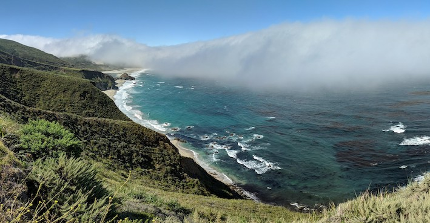

Publications
- E.K. de Jong, J.B. Mackay, O. Bulenok, A. Jaruga, S. Arabas
Breakups are complicated: an efficient representation of collisional breakup in the superdroplet method
Geosci. Model Dev., 16, 4193–4211, 2023.
- E.K. de Jong, C.E. Singer, S. Azimi, P. Bartman, O. Bulenok, K. Derlatka, I. Dula, A. Jaruga, J.B. Mackay, R.X. Ward, S. Arabas
New developments in PySDM and PySDM-examples v2: collisional breakup, immersion freezing, dry aerosol initialization, and adaptive time-stepping
Journal of Open Source Software, 8(84), 2023.
- M. Bieli, O.R.A. Dunbar, E.K. de Jong, A. Jaruga, T. Schneider and T. Bischoff
An Efficient Bayesian Approach to Learning Droplet Collision Kernels: Proof of Concept Using “Cloudy,” a New n-Moment Bulk Microphysics Scheme
J. Adv. Model. Earth Syst., 14(8):e2022MS002994, 2022.
- P. Bartman, O. Bulenok, K. Górski, A. Jaruga, G. Łazarski, M. A. Olesik, B. Piasecki, C. E. Singer, A. Talar, S. Arabas
PySDM v1: particle-based cloud modeling package for warm-rain microphysics and aqueous chemistry
J. Open Source Softw., 7(72), pages: 3219, 2022.
- Z. Shen, A. Sridhar, Z. Tan, A. Jaruga, and T. Schneider,
A Library of Large-Eddy Simulations Forced by Global Climate Models
J. Adv. Model. Earth Syst., 14(3):e2021MS002631, 2022.
- I. Lopez-Gomez, Y. Cohen, J. He, A. Jaruga, and T. Schneider,
A generalized mixing length closure for eddy-diffusivity mass-flux schemes of turbulence and convection.
J. Adv. Model. Earth Syst., 12(11):e2020MS002161, 2020.
- Y. Cohen, I. Lopez-Gomez, A. Jaruga, J. He, C. M. Kaul, and T. Schneider,
Unified entrainment and detrainment closures for extended eddy-diffusivity mass-flux schemes.
J. Adv. Model. Earth Syst., 12(9):e2020MS002162, 2020.
- A. Jaruga and H. Pawlowska,
libcloudph++ 2.0: aqueous-phase chemistry extension of the particle-based cloud microphysics scheme.
Geosci. Model Dev., 11(9):3623–3645, 2018.
- A. Jaruga, S. Arabas, D. Jarecka, H. Pawlowska, P. K. Smolarkiewicz, and M. Waruszewski,
libmpdata++ 1.0: a library of parallel MPDATA solvers for systems of generalised transport equations.
Geosci. Model Dev., 8(4):1005–1032, 2015.
- S. Arabas, A. Jaruga, H. Pawlowska, and W. W. Grabowski,
libcloudph++ 1.0: a single-moment bulk, double-moment bulk, and particle-based warm-rain microphysics library in C++.
Geosci. Model Dev., 8(6):1677–1707, 2015.
- D. Jarecka, A. Jaruga, , and P. K. Smolarkiewicz,
A spreading drop of shallow water.
J. Comput. Phys., pages 53 – 61, 2015.
- S. Arabas, D. Jarecka, A. Jaruga, and M. Fijałkowski.
Formula translation in blitz++, numpy and modern fortran: A case study of the language choice tradeoffs.
Scientific Programming, 22:201 – 222, 2014.
